POKA REMINDER
Meds are easy to forget. Poka is hard to ignore.
- ROLE
- Founder, designer, developer. All of it
- TEAM
- Solo, with my father and a close friend as the users
- TIMELINE
- 8 months to launch, 2025
- PLATFORM
- iOS, built cross platform in React Native
Poka started with two people who kept missing their medication: my father, whose prescriptions run on odd intervals, and a close friend with ADHD. Both had tried alarms and reminder apps. Every one worked for a week, then became noise. So I built them a reminder with someone at the centre: a small creature that nudges you when it is time, relaxes when you check off a dose, and cheers you on as you unlock a deck of collectible cards. I started a company and did everything myself, research to App Store review, on my first app built end to end.
A reminder, as usually built An alarm that fires at 22:00 and is swiped away at 22:01.
The reminder I designed A character that waits for you, and notices when you show up.
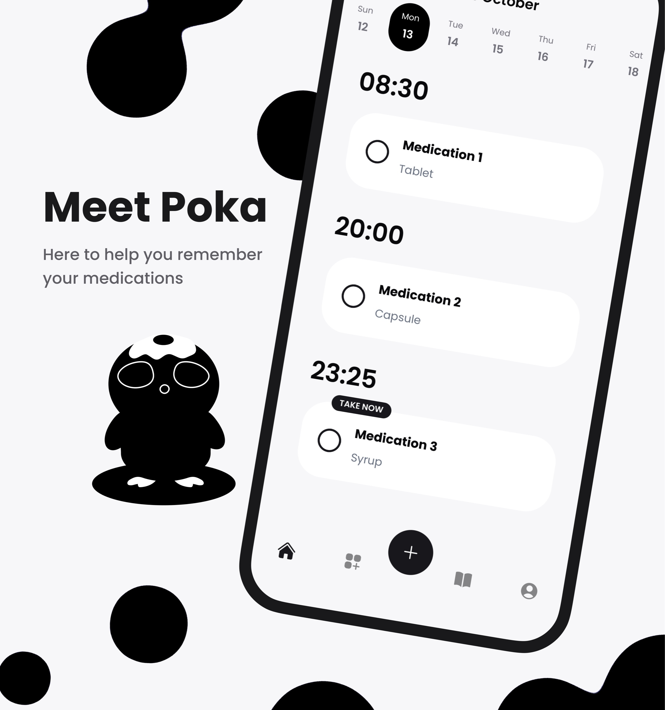
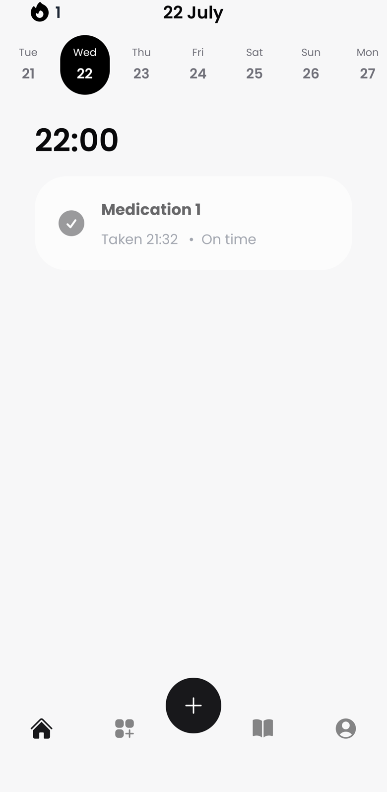
AN ALARM YOU LEARN TO IGNORE
Taking medication is a repetition problem, and the people who struggle with it most are the ones repetition serves worst. For someone with ADHD, a reminder competes with everything else that is louder than it. For someone on depression medication, the hard part is not knowing what to do, it is finding a reason to do it today. And prescriptions do not run on round numbers: every other day, twice a week, every six weeks, three times a day but only until the box is empty.
A phone alarm is designed to be dismissed. Dismissing it is the whole interaction. After a week the swipe is muscle memory, and the medication it stood for never happened. Every tool my two users had tried failed the same way: not loudly, just gradually, until it was ignored like everything else.
This was not a market I spotted. It was my father sorting pills into a weekly box he did not trust, and my friend rediscovering a missed dose at midnight. I wanted to build them something that would still be working in month three.
MAKE IT SOMEONE, NOT SOMETHING
Reminders do not fail technically. They fire on time, every time. They fail socially: nothing about them makes you feel anything when you ignore them. So the bet was to put a character between the user and the schedule. Poka is a small, soft, slightly anxious creature. It nudges you gently when it is time, relaxes when you check off your dose, and hands you a collectible card when you keep showing up. Ignoring an alarm costs nothing. Ignoring someone who is waiting for you does.
I'll... I'll do my best. I promise.
That is Poka, in the app's own voice. The character is shy and tries hard, which flips the usual dynamic: you are not being managed by a productivity tool, you are letting a small penguin down. The stutter is deliberate. Confidence is easy to ignore. Effort is not.
There was a second, quieter reason to bet on character. This was my first full app: I had built front ends before, but never a native app with its own backend, accounts, and payments. Building while learning meant the feature set had to stay small. The craft budget went where a solo builder can actually compete, into the mascot, the motion, and the feel.
TESTED AT KITCHEN TABLE SCALE
The research plan fit the project: interviews, co-building, and testing with the two people it was for. My father supplied the scheduling reality, prescriptions with intervals no preset covers, and a hard requirement that he could see, at any moment, what was set up and when it would fire. My friend supplied the motivation reality: any app that felt like homework was already deleted. Every build went to their phones first, and every session was a chance to watch a real dose get taken or missed.
People ignore alarms. They do not like disappointing someone.
The finding that shaped everything was emotional attachment to the mascot. Both users talked about Poka the way you talk about a pet, not a feature. They checked doses off partly so the character would be pleased, and they noticed when it was sad. I had bet on the character; watching two very different users bond with it was the evidence the bet deserved more of the budget, not less.
Two users is not a study, and I am not going to pretend it is one. It is depth instead of breadth, the same trade I have defended elsewhere in this portfolio, and for an app built for two named people it was the right one. What it cannot tell you is whether strangers will pay for it. That bill arrives later in this story.
THE FLOW
POKA SPEAKS FIRST
Onboarding opens with the character, not a form. Poka stutters through a hello, explains why it is here, and only then asks you to sign in with Google or Apple. Even the iOS notification prompt stays in character: Allow Poka to poke you? By the time the first form appears, you already know who is asking.
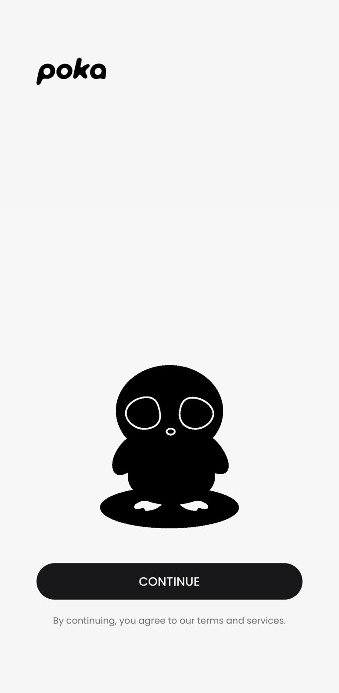
IMAGE · SPLASHA SCHEDULE SHAPED LIKE THE PRESCRIPTION
Creating a medication is a short interview: name, type, interval, times per day, start date, end date or take forever, and the exact reminder times. The interval list is where my father's prescriptions live: every day, every other day, specific weekdays, every X days, every X weeks, every X months. It ends on a summary you can read like a sentence, so what you set is what you trust.
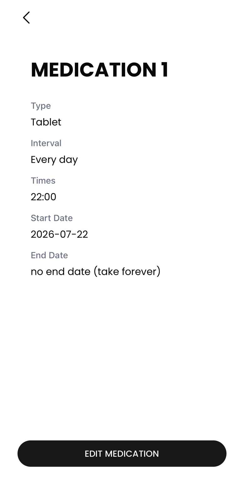
IMAGE · MEDICATION DETAILA DAY YOU CAN TRUST
A reminder app earns trust by showing its work. The home screen is the day: each dose under its time, checked or waiting, with the week strip above it for what is coming. The medications tab is the contract: every schedule, spelled out. If a user ever has to wonder whether a reminder is actually set, the app has already failed, so the answer is always one glance away.
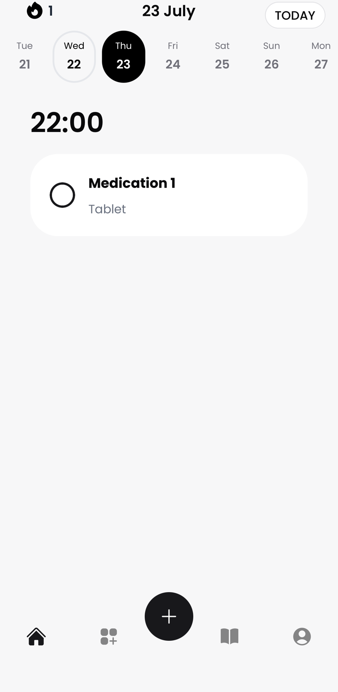
IMAGE · TOMORROW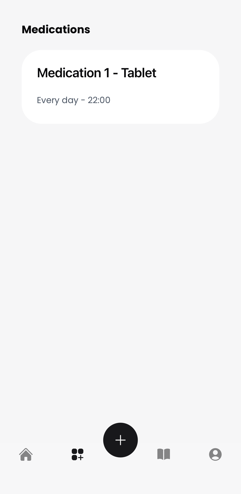
IMAGE · MEDICATIONSTHE PAYOFF
Checking off a dose is the whole game, so that is where the celebration lives. Poka cheers, the streak grows, and on a good day a blob morphs into a new card. The reward loop pays for adherence, never for screen time: there is nothing to earn by just opening the app.
A DECK WORTH KEEPING
The cards are Poka's hats, each with a level and a personality of its own. Sad Egg arrives first; Mushroom Mood, Crying Onion, Plant of Patience, and Toast of Triumph wait behind more taken doses. The writing keeps the character's voice, so even the collection nags you kindly.
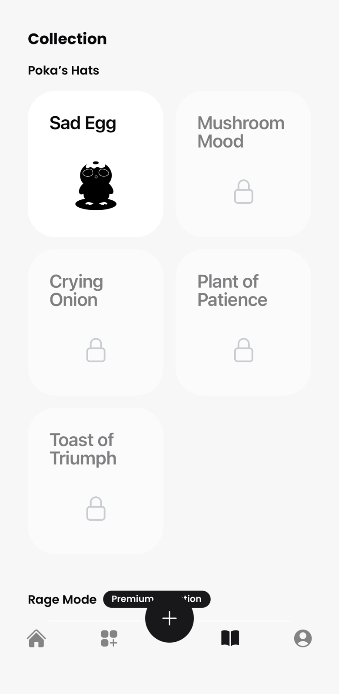
IMAGE · POKA'S HATSDESIGN DECISIONS
- Schedules bend to prescriptions
- The interval system was designed around the worst real prescription I knew, not the average one. Every day is the easy case; every other day, specific weekdays, and every X days, weeks or months are the cases that make people give up on other apps. If the schedule cannot be entered exactly, the reminder is wrong from day one.
- The schedule always shows its work
- Day view, week strip, medication detail: three places where the user can confirm what is set and when it fires. Trust in a reminder app is binary. One dose missed because the app was vague and it gets deleted, so the state of every reminder is always one glance away.
- A character carries the motivation
- Nudges come from someone, not something. Poka is soft, shy, and visibly pleased when you show up, which makes ignoring it feel like letting someone down. That feeling was the retention mechanism the boring alarms lacked.
- Rewards pay for adherence, not attention
- Streaks and cards are earned by checking off doses, nothing else. There is no daily login bonus and nothing to farm by opening the app. The engagement loop and the health outcome are the same loop, on purpose.
- Premium adds Poka, never removes safety
- The free app keeps a complete reminder loop. Premium adds more medications, more daily doses, more card decks, and Rage Mode for the days gentle does not work. Nobody's adherence is held hostage by a paywall.
FIRST APP, WHOLE STACK
Designing in Figma was the comfortable part. Everything after it was new: React Native with Expo for the app, Firebase for accounts, data, and push notifications, RevenueCat for subscriptions, and the Apple developer pipeline for provisioning, review, and release. Sign in with Google and Apple, consent flows, account deletion: the unglamorous half of an app turned out to be most of the app.
Building while learning set the pace and the scope. Every feature was the first time I had built that kind of feature, so each one cost more than it would cost me today. The discipline that saved the project was refusing to widen the feature set: one medication loop done properly, with the saved effort spent on the character and motion that made the app worth keeping. Eight months later it passed App Store review.
A COMPANY OF ONE
Poka was also my first company: registering it, pricing a subscription, wiring RevenueCat to the paywall, and writing the privacy policy myself. The goal was deliberately modest. First make the app genuinely work for its two users, then market to see if people would pay for more Poka. The paywall reflects that order: it sells the collection and the extras, while the core reminder loop stays free.
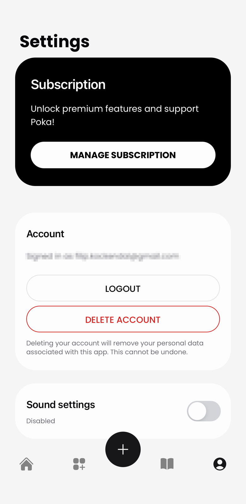
IMAGE · SETTINGSLAUNCH, AND THE PART I HAD NEVER DONE
The launch itself went cleanly: listing copy, App Store screenshots, and a preview video where Poka introduces itself in its own nervous voice. The marketing after the launch is where my experience ran out. I made character videos and posted where I could, but I had no channel, no audience, and no plan beyond the product being likeable. Design and code got eight months of craft; distribution got the leftovers, and the download numbers said so.
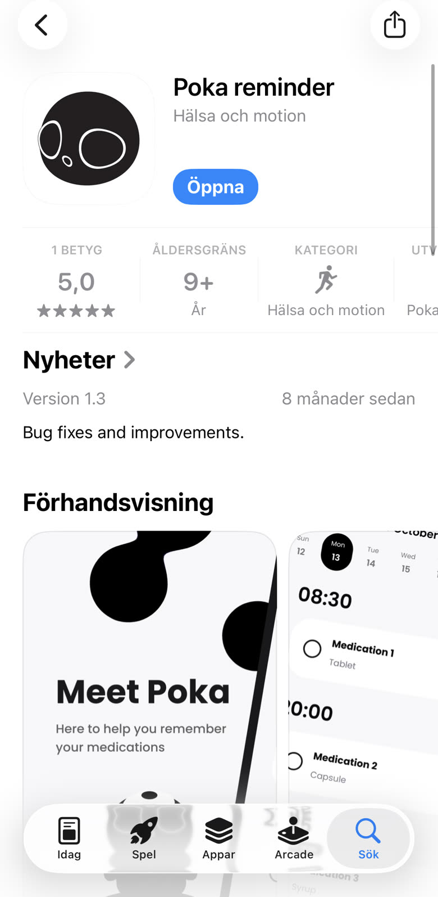
IMAGE · APP STOREThe screenshot set had one job: say what the app is before anyone reads a word of the description. Poka introduces itself first, then three claims, one screen each, in the order someone decides in. The schedule proves it fits your prescription, the celebration shows what taking a dose feels like, and the locked cards give a reason to come back tomorrow.
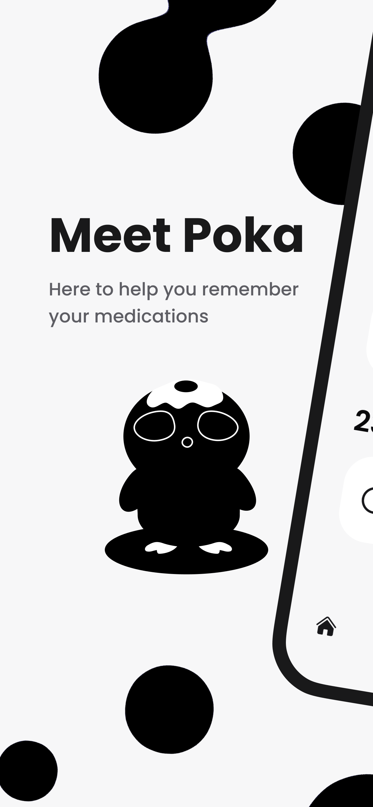
STORE · MEET POKA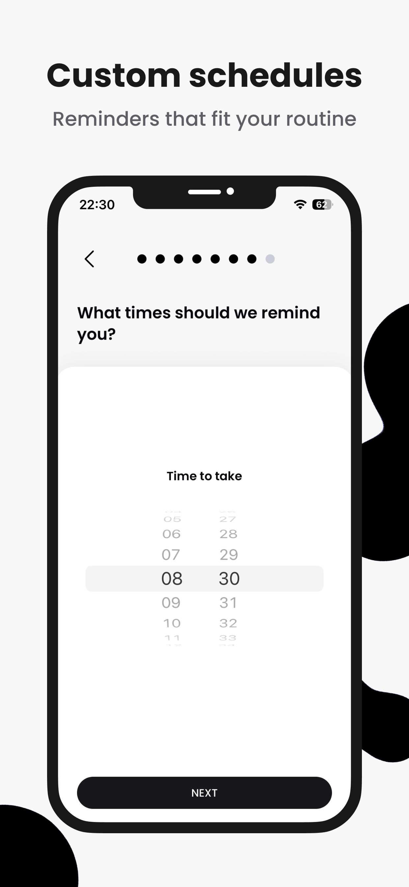
STORE · SCHEDULES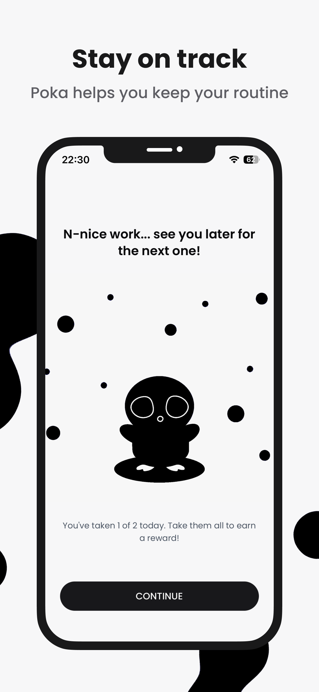
STORE · STAY ON TRACK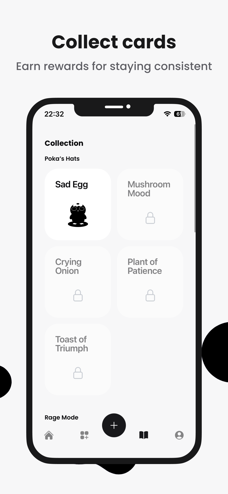
STORE · COLLECT CARDSThe store was not the only front door, so Poka got a site of its own: the same character, the same blobs, and the two download buttons above everything else. It is written as Poka's own page rather than a product page, which is why the specs are a stat block (swimming speed, melt resistance, medication memory) instead of a feature list. See the site for yourself.
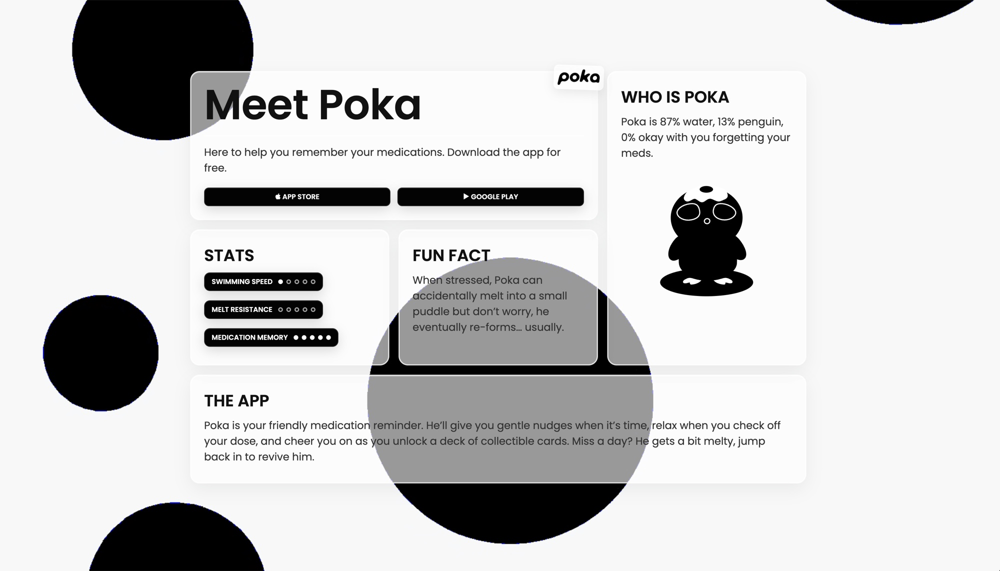
IMAGEWHAT HAPPENED
- 8months from first sketch to the App Store, everything solo
- 5.0App Store rating, from one review, counted honestly
- 2users it was built for, and who kept using it
The public numbers are small and I will state them plainly: a few dozen downloads, a handful of active users over the following months, no meaningful revenue. The feedback that did come back kept naming one thing, and it was not the scheduling engine. People mentioned Poka: that they liked it, that it was cute, that they felt something when it cheered. The emotional bet was the part strangers noticed too.
Against its original goal, the app delivered. It was built for two people with two very different reasons to miss their meds, and both used it, understood their schedules at a glance, and kept their streaks alive. As a business it did not find its market. As a product it found its two users, which is what it was for.
WHAT I LEARNED
Building a product and building a business are different jobs, and I only did one of them well. Marketing deserved the same research the product got: before spending eight months building, I should have spent a few weeks finding out whether enough strangers wanted this to pay for it. The product side validated everything with two users before writing code. The business side validated nothing and hoped. If I convert a side project into a company again, traction comes first, then the build.
I also learned what a solo bet on craft can and cannot do. Character and motion made people care about a utility app, carried it through App Store review, and earned its only review at five stars. What they could not do is replace distribution. Poka is paused for now, still live, still poking. The lesson is not paused: make people want the thing before you make the thing this good.